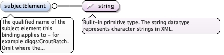
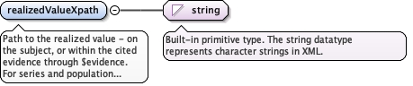
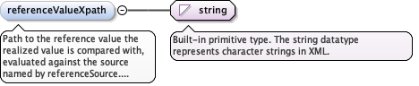
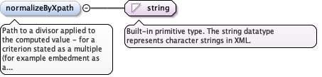

The qualified name of the subject element this binding applies to- for example diggs:GroutBatch. Omit where the binding applies to anysubject that carries the value.
Diagram

Type
string
Properties
content
simple
minOccurs
0
Source
<element minOccurs="0" name="subjectElement" type="string"><annotation><documentation>The qualified name of the subject element this binding applies to - for example diggs:GroutBatch. Omit where the binding applies to any subject that carries the value.</documentation></annotation></element>
The plan distance between the realized position and the reference position.
enumeration
difference
The realized value minus the reference value.
enumeration
reverse_difference
The reference value minus the realized value - for example theembedment of an element's toe below the top of its bearing unit.
enumeration
angular_difference
The angle between the realized direction and the reference direction - for example an as-built plunge against the design plunge.
enumeration
containment
Boolean: whether the realized position lies within the reference geometry.
enumeration
sequence_between
Boolean: whether the subject was installed after its nearest built design predecessor and before its nearest built design successor. The realized value is the subject's as-built order (installationSequenceNumber, else its construction time). The neighbours are found from the governing design's installation sequence and the design position each built feature realizes. The first and last in sequence are checked against the one neighbour they have; unbuilt design positions are skipped. A feature installed out of order fails, and so can one of its neighbours.
enumeration
value_at
The realized series, a sequence of (x, y) pairs, interpolated at the reference value - for example settlement at the design bearing pressure, from a series of (applied stress, settlement) pairs. Where no reference path is given, the reference value is that of the criterion's evidenceCondition whose code names the series' x quantity.
enumeration
rate
The slope of the realized series per unit of its index, over the window the criterion's evidenceCondition selects.
enumeration
rate_per_log_cycle
The change in the realized series per log10 cycle of its index, over the window the criterion's evidenceCondition selects - for example anchor creep.
enumeration
change_over_window
The realized series at the reference index minus the same series one window earlier, both interpolated - for example the depth an installation tool gained in the two minutes before it reached its final depth. The reference path yields the index at which the window ends; the window length is the criterion's evidenceCondition interval_duration, in the units of the series index. A window that starts before the series begins leaves the binding unresolved.
enumeration
within_envelope
Boolean: whether every point of the realized curve lies between the two reference curves (lower then upper) at its index, both interpolated - for example a gradation between its limit curves.
enumeration
frequency
The count of qualifying evidence items across the population, divided by the summed normalizing quantity - for example tests per volume placed. Requires the criterion's statisticScope to be population.
Source
<element name="method" type="diggs:ValueBindingMethodEnumType"><annotation><documentation>How the realized value (and any reference value) become the value compared against the criterion's limit.</documentation></annotation></element>
Path to the realized value - on the subject, or within the citedevidence through $evidence. For series and population methods, the pathyields the series, curve or set of items the method works on.
Diagram

Type
string
Properties
content
simple
Source
<element name="realizedValueXpath" type="string"><annotation><documentation>Path to the realized value - on the subject, or within the cited evidence through $evidence. For series and population methods, the path yields the series, curve or set of items the method works on.</documentation></annotation></element>
Path to the reference value the realized value is compared with,evaluated against the source named by referenceSource. Required by themethods that compare two values (horizontal_offset, difference,reverse_difference, angular_difference, containment,within_envelope), and optional for value_at, which otherwise takes thevalue of the criterion's evidenceCondition; not used by theothers.
Diagram

Type
string
Properties
content
simple
minOccurs
0
Source
<element minOccurs="0" name="referenceValueXpath" type="string"><annotation><documentation>Path to the reference value the realized value is compared with, evaluated against the source named by referenceSource. Required by the methods that compare two values (horizontal_offset, difference, reverse_difference, angular_difference, containment, within_envelope), and optional for value_at, which otherwise takes the value of the criterion's evidenceCondition; not used by the others.</documentation></annotation></element>
The evidence the acceptance check cites ($evidence).
enumeration
subject
The check's subject itself - for a requirement about aconstruction activity, the activity.
Source
<element minOccurs="0" name="referenceSource" type="diggs:ReferenceSourceEnumType"><annotation><documentation>Where the reference path is evaluated: the governing design, or the cited evidence. Required with referenceValueXpath.</documentation></annotation></element>
The node is a surface; the value is its elevation at the subject's plan position.
enumeration
volume_top
The node is a volume; the value is the elevation where a vertical line at the subject's plan position first enters it from above.
enumeration
volume_base
The node is a volume; the value is the elevation where a vertical line at the subject's plan position last leaves it below.
Source
<element minOccurs="0" name="referenceEvaluation" type="diggs:ReferenceEvaluationEnumType"><annotation><documentation>How the node the reference path yields becomes a value. Omitted means value.</documentation></annotation></element>
Path to a divisor applied to the computed value - for a criterionstated as a multiple (for example embedment as a multiple of the columndiameter) or as a rate per quantity (for example tests per volumeplaced). The divisor is applied only where the criterion's basis statesthat form (a basis of per diameter, per volume placed); where the limit isan absolute quantity - a minimum embedment of 2 m, say - the binding yieldsthe unnormalized value and the divisor is not applied.
Diagram

Type
string
Properties
content
simple
minOccurs
0
Source
<element minOccurs="0" name="normalizeByXpath" type="string"><annotation><documentation>Path to a divisor applied to the computed value - for a criterion stated as a multiple (for example embedment as a multiple of the column diameter) or as a rate per quantity (for example tests per volume placed). The divisor is applied only where the criterion's basis states that form (a basis of per diameter, per volume placed); where the limit is an absolute quantity - a minimum embedment of 2 m, say - the binding yields the unnormalized value and the divisor is not applied.</documentation></annotation></element>
Complex Type diggs:ValueBindingType
Namespace
http://diggsml.org/schemas/3
Annotations
Type defining how a property's value is located and compared. PATHS are XPath 3.1 expressions evaluated with the check's subject as the context node. Two variables are bound: $design, the subject's governing design (resolved through programDesignRef, then basedOnRef, most specific first), and $evidence, the evidence the acceptance check cites through evidenceMeasurementRef, evidenceObservationRef or evidenceConstructionActivityRef. Three functions are available: diggs:deref(ref) follows a reference's xlink:href to its target; diggs:series(result, propertyCode) returns a result's encoded data for one coded property as ordered (index, value) pairs, each pair an XPath array of two members, so $pair?1 is the index and $pair?2 the value. The index of a series from a time-indexed record is the elapsed time in seconds from the first time of the record's domain, whether the domain lists elapsed intervals (diggs:TimeIntervalList, in its own unit) or time positions (diggs:TimePositionList). A result with no domain, a laboratory test result for example, is indexed by row number from 1; diggs:valueAt(series, x) interpolates a series linearly at x. UNITS: every value carries the uom of its measure (or its parameterUnits); a coordinate taken from a geometry carries the units of its CRS axis. The evaluator converts it to the units of the criterion's limit using the DIGGS unit dictionary. A value that cannot be converted leaves the binding unresolved. GEOMETRIC REFERENCE EVALUATIONS are made at the subject's plan position (the x,y of its referencePoint). Surfaces may be PlanarSurface, CompositeSurface, MultiPlanarSurface or TriangulatedSurface; volumes may be a SurfaceBoundedSolid (top and bottom surfaces clipped by its footprint) or a Solid (exterior and interior shells). A plan position outside the geometry, or geometry in a different CRS from the subject, leaves the binding unresolved. A binding that does not resolve is skipped, and the next binding is tried.
<complexType name="ValueBindingType"><annotation><documentation>Type defining how a property's value is located and compared. PATHS are XPath 3.1 expressions evaluated with the check's subject as the context node. Two variables are bound: $design, the subject's governing design (resolved through programDesignRef, then basedOnRef, most specific first), and $evidence, the evidence the acceptance check cites through evidenceMeasurementRef, evidenceObservationRef or evidenceConstructionActivityRef. Three functions are available: diggs:deref(ref) follows a reference's xlink:href to its target; diggs:series(result, propertyCode) returns a result's encoded data for one coded property as ordered (index, value) pairs, each pair an XPath array of two members, so $pair?1 is the index and $pair?2 the value. The index of a series from a time-indexed record is the elapsed time in seconds from the first time of the record's domain, whether the domain lists elapsed intervals (diggs:TimeIntervalList, in its own unit) or time positions (diggs:TimePositionList). A result with no domain, a laboratory test result for example, is indexed by row number from 1; diggs:valueAt(series, x) interpolates a series linearly at x. UNITS: every value carries the uom of its measure (or its parameterUnits); a coordinate taken from a geometry carries the units of its CRS axis. The evaluator converts it to the units of the criterion's limit using the DIGGS unit dictionary. A value that cannot be converted leaves the binding unresolved. GEOMETRIC REFERENCE EVALUATIONS are made at the subject's plan position (the x,y of its referencePoint). Surfaces may be PlanarSurface, CompositeSurface, MultiPlanarSurface or TriangulatedSurface; volumes may be a SurfaceBoundedSolid (top and bottom surfaces clipped by its footprint) or a Solid (exterior and interior shells). A plan position outside the geometry, or geometry in a different CRS from the subject, leaves the binding unresolved. A binding that does not resolve is skipped, and the next binding is tried.</documentation></annotation><sequence><element minOccurs="0" name="subjectElement" type="string"><annotation><documentation>The qualified name of the subject element this binding applies to - for example diggs:GroutBatch. Omit where the binding applies to any subject that carries the value.</documentation></annotation></element><element name="method" type="diggs:ValueBindingMethodEnumType"><annotation><documentation>How the realized value (and any reference value) become the value compared against the criterion's limit.</documentation></annotation></element><element name="realizedValueXpath" type="string"><annotation><documentation>Path to the realized value - on the subject, or within the cited evidence through $evidence. For series and population methods, the path yields the series, curve or set of items the method works on.</documentation></annotation></element><element minOccurs="0" name="referenceValueXpath" type="string"><annotation><documentation>Path to the reference value the realized value is compared with, evaluated against the source named by referenceSource. Required by the methods that compare two values (horizontal_offset, difference, reverse_difference, angular_difference, containment, within_envelope), and optional for value_at, which otherwise takes the value of the criterion's evidenceCondition; not used by the others.</documentation></annotation></element><element minOccurs="0" name="referenceSource" type="diggs:ReferenceSourceEnumType"><annotation><documentation>Where the reference path is evaluated: the governing design, or the cited evidence. Required with referenceValueXpath.</documentation></annotation></element><element minOccurs="0" name="referenceEvaluation" type="diggs:ReferenceEvaluationEnumType"><annotation><documentation>How the node the reference path yields becomes a value. Omitted means value.</documentation></annotation></element><element minOccurs="0" name="normalizeByXpath" type="string"><annotation><documentation>Path to a divisor applied to the computed value - for a criterion stated as a multiple (for example embedment as a multiple of the column diameter) or as a rate per quantity (for example tests per volume placed). The divisor is applied only where the criterion's basis states that form (a basis of per diameter, per volume placed); where the limit is an absolute quantity - a minimum embedment of 2 m, say - the binding yields the unnormalized value and the divisor is not applied.</documentation></annotation></element></sequence></complexType>